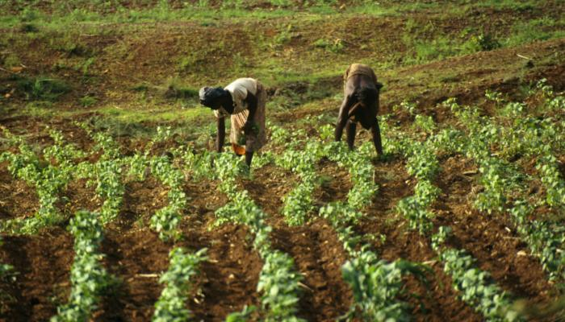
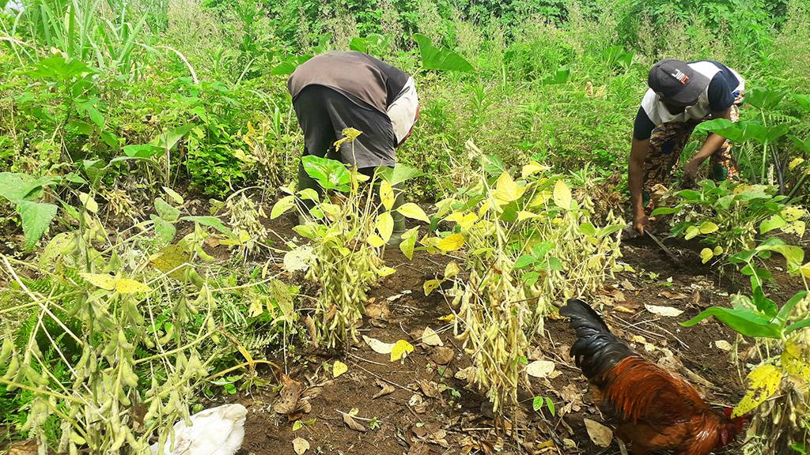
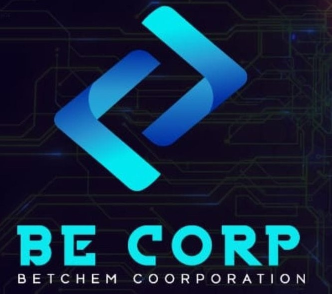
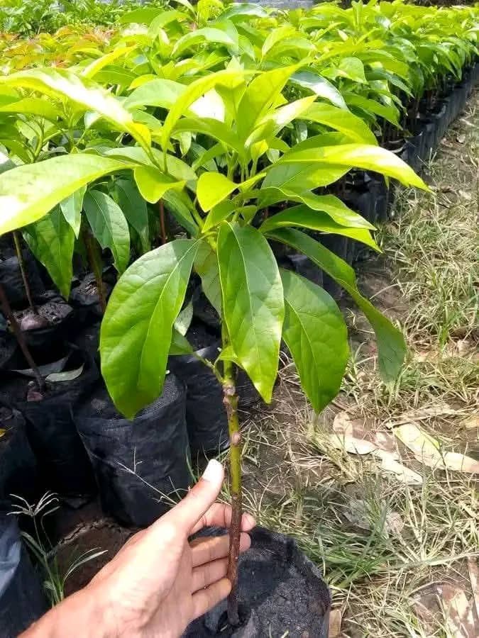
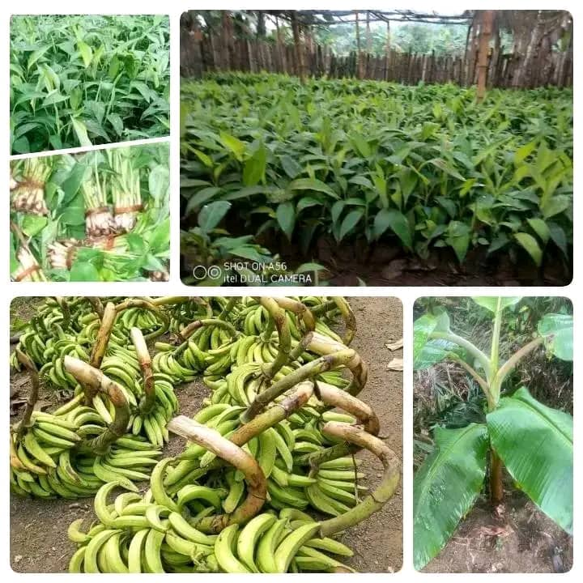
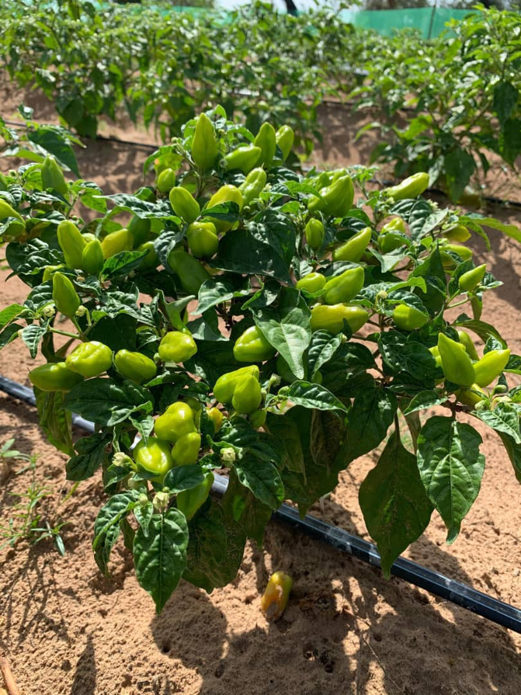
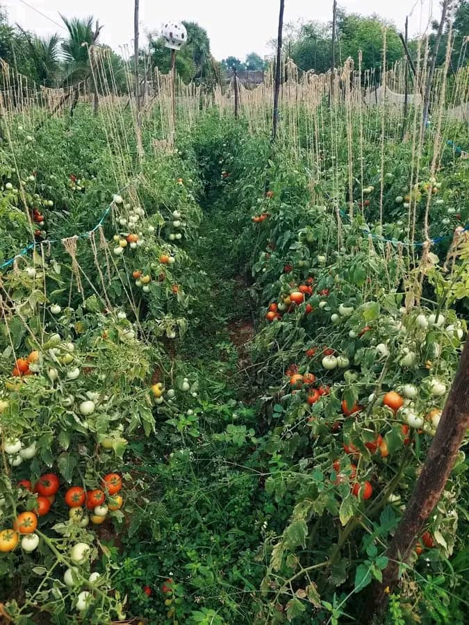
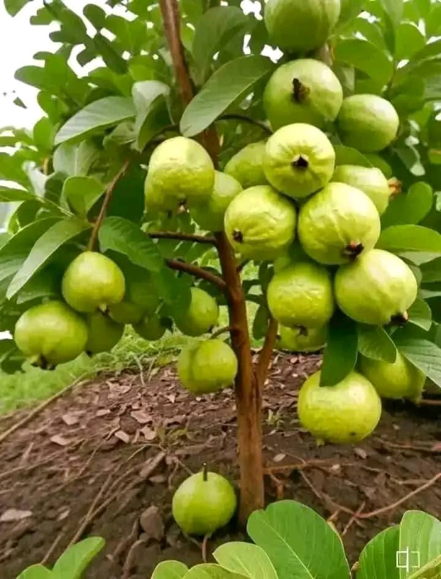
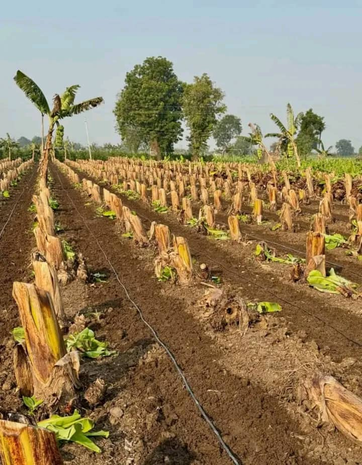

.webp)

Nos partenaires

.webp)
Nos réalisations

Ferme intégrée bio
15 hectares de cultures biologiques certifiées
En activité depuis 2025
Vergers agroécologiques
Production de Banane plantain bio

Formation terrain
200+ plans de Piments formés

Jardin pédagogique
formation pratique

Vergers conservatoires
Préservation des espèces locales

Bananeraie bio
Production certifiée
Ils nous font confiance dans le monde
"Accompagnement exceptionnel pour notre domaine viticole en Provence. Leur expertise en certification bio et leur réseau international nous ont ouvert les marchés asiatiques. Un partenaire stratégique de premier plan."
"Les ingénieurs viennent régulièrement sur notre ferme à Nkolbisson pour vérifier l'état des sols et ajuster les traitements bio. Notre production a doublé en 18 mois. Un suivi technique irréprochable."
"Bonne orientation sur les stratégies de commercialisation pour notre verger. Les études de marché étaient pertinentes, même si certains conseils étaient trop généralistes pour le marché nord-américain."
"Notre exploitation de café à Bafoussam bénéficie d'un suivi technique pointu. Les méthodes de lutte biologique contre les parasites ont sauvé notre production. Qualité désormais certifiée bio."
"Solutions innovantes pour la gestion de l'eau en zone sahélienne. Notre production maraîchère près de Dakar a résisté à la sécheresse grâce à leurs techniques d'irrigation raisonnée."
"Accompagnement financier exceptionnel pour notre exploitation laitière dans les Alpes. Ils nous ont orientés vers des fonds de développement durable européens. Notre projet est aujourd'hui rentable."
"L'appui technique pour notre coopérative de vanille était correct, mais les formations étaient trop courtes. Nous aurions aimé plus de suivi sur place. L'équipe reste compétente et à l'écoute."
"Aide précieuse pour structurer notre unité de transformation de fruits bio à Douala. Les normes de conservation sont claires, mais la logistique d'approvisionnement pourrait être mieux anticipée. Bon accompagnement global."
"Les méthodes de fermentation et de séchage bio ont transformé la qualité de notre cacao. Les chocolatiers européens se l'arrachent désormais. Un grand merci à toute l'équipe technique."
"Conseils pertinents sur les procédures de certification en Europe. Dossier accepté du premier coup. Seul bémol : les délais de réponse par email étaient parfois longs. Reste une équipe professionnelle."
"Notre exploitation de coton bio dans la région de Garoua a bénéficié de leur expertise technique. Les méthodes de rotation des cultures et de lutte intégrée ont considérablement amélioré la qualité de notre production. Un accompagnement sérieux."
"Notre plantation de cacao dans la région d'Ebolowa était en déclin à cause des maladies. Leur expertise en lutte biologique et en régénération des sols a sauvé notre exploitation. Aujourd'hui, nous produisons un cacao bio d'exception recherché par les acheteurs internationaux."